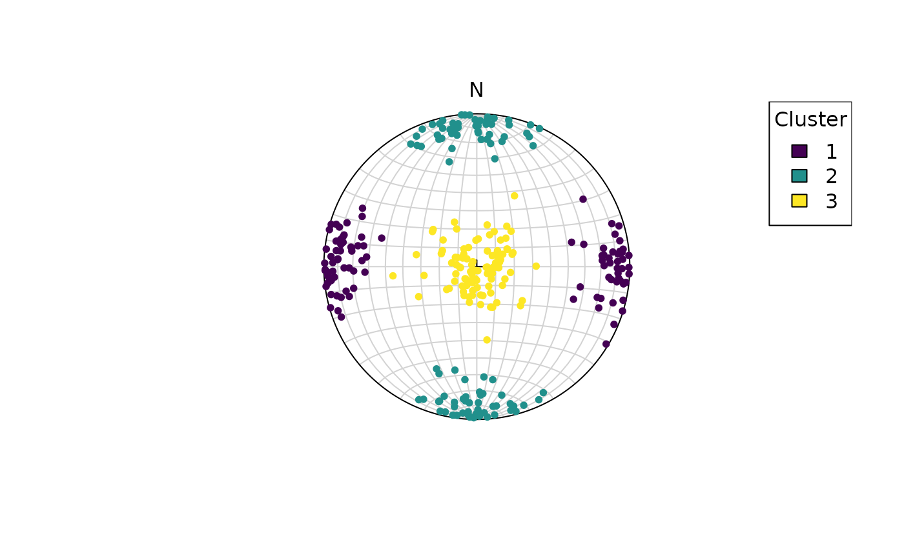

Import
From a Strabospot project, download the json file and import it using
the read_strabo_JSON() function.
This returns a list which contains all the information and metadata
(including coordinates, descriptions etc) extracted from the Strabospot
project in the list element data, the tags used for the
project in the list element tags, and the linear and planar
orientation measurements in the list elements lines and
planes, respectively.
Data conversion to spherical objects
Usually orientation data is stored in a table containing the column dip direction (or strike) and the dip angle of a measured plane…
data(example_planes)
head(example_planes)
#> # A tibble: 6 × 4
#> dipdir dip quality feature_type
#> <dbl> <dbl> <dbl> <chr>
#> 1 142 52 3 foliation
#> 2 135 43 3 foliation
#> 3 148 42 3 foliation
#> 4 150 46 3 foliation
#> 5 139 51 3 foliation
#> 6 158 51 3 foliationor the trend (azimuth) and plunge (inclination) of a measured line…
data(example_lines)
head(example_lines)
#> # A tibble: 6 × 4
#> trend plunge quality feature_type
#> <dbl> <dbl> <dbl> <chr>
#> 1 54 13 3 stretching
#> 2 61 15 3 stretching
#> 3 74 14 NA stretching
#> 4 80 19 NA stretching
#> 5 63 17 NA stretching
#> 6 76 10 NA stretchingTo convert these data frames to spherical objects, use the
Plane() and Line() functions from the
structr package. These functions take the dip direction and
dip angle for planes, and the trend and plunge for lines as
arguments.
data(example_planes)
planes <- Plane(example_planes$dipdir, example_planes$dip)
lines <- Line(example_lines$trend, example_lines$plunge)If the raw data was imported using
read_strabo_JSON()this step is not necessary as the data will come already in the correct format.
The spherical objects can be easily converted into Cartesian
coordinate vectors using the functions line2vec() or
plane2vec():
lines_vector <- Vec3(lines)
head(lines_vector)
#> Vector (Vec3) object (n = 6):
#> x y z
#> [1,] 0.5727204 0.7882819 0.2249511
#> [2,] 0.4682901 0.8448178 0.2588190
#> [3,] 0.2674497 0.9327081 0.2419219
#> [4,] 0.1641876 0.9311540 0.3255682
#> [5,] 0.4341533 0.8520738 0.2923717
#> [6,] 0.2382466 0.9555548 0.1736482
planes_as_line <- Vec3(planes)
head(planes_as_line)
#> Vector (Vec3) object (n = 6):
#> x y z
#> [1,] 0.6209609 -0.4851479 0.6156615
#> [2,] 0.4822457 -0.4822457 0.7313537
#> [3,] 0.5674549 -0.3545852 0.7431448
#> [4,] 0.6229665 -0.3596699 0.6946584
#> [5,] 0.5865195 -0.5098536 0.6293204
#> [6,] 0.7205572 -0.2911240 0.6293204which produces the same output as
head(Vec3(planes_as_line))
#> Vector (Vec3) object (n = 6):
#> x y z
#> [1,] 0.6209609 -0.4851479 0.6156615
#> [2,] 0.4822457 -0.4822457 0.7313537
#> [3,] 0.5674549 -0.3545852 0.7431448
#> [4,] 0.6229665 -0.3596699 0.6946584
#> [5,] 0.5865195 -0.5098536 0.6293204
#> [6,] 0.7205572 -0.2911240 0.6293204Vector operations
Since the spherical or vector objects are easily convertible, they can be used for all sort of vector operations, such as the magnitude (or length), the angle between vectors, dot product, cross product, projection and rotation.
Define some example vectors:
The vector length (or magnitude):
vector_length(line1)
#> [1] 1Orientation vectors are by definition unit vectors, i.e. their length is equal to 1.
The angle between two vectors
angle(line1, line2)
#> [1] 78.89371The dot product (or scalar product) of two vectors
line1 %*% line2
#> [1] 0.1926297Intuitively, the dot product tells us how much two vectors point in the same direction.
The cross product of two vectors:
crossprod(line1, line2)
#> Line object (n = 1):
#> azimuth plunge
#> 258.66786 32.21399This gives the vector that is perpendicular to the plane spanned by the two vectors.
The projection of a vector on another vector:
project(line1, line2)
#> Line object (n = 1):
#> azimuth plunge
#> 10 30Because of vectors a unit vectors, the projected vector is equal to the second vector.
The rotation of a vector about another vector (rotation axis) by a specified rotation angle:
rotate(line1, rotaxis = line2, rotangle = 45)
#> Line object (n = 1):
#> azimuth plunge
#> 210.50391 70.01332Linear transformation transforms vectors using a transformation matrix (second-order tensor).
trans_mat <- matrix(runif(9), 3, 3)
transform_linear(line1, trans_mat)
#> Vector (Vec3) object (n = 1):
#> x y z
#> 0.44288029 -0.04205583 0.62796680Cluster vectors
To find k clusters of orientation vectors:
# generate some random vectors:
set.seed(20250411)
x1 <- rvmf(100, mu = Line(90, 0), k = 20)
x2 <- rvmf(100, mu = Line(0, 0), k = 20)
x3 <- rvmf(100, mu = Line(0, 90), k = 20)
x123 <- rbind(x1, x2, x3)
# cluster the vectors:
cl <- v_cluster(x123, k = 3)
# visualize the result:
plot(x123, col = assign_col_d(cl$cluster))
legend_d(assign_col_d(unique(cl$cluster)), title = "Cluster")